Attention（1）¶
Attention的本质是通过点积来衡量q和k之间相关性并进行加权求和，由于输入的不同，可分为自注意力和交叉注意力机制
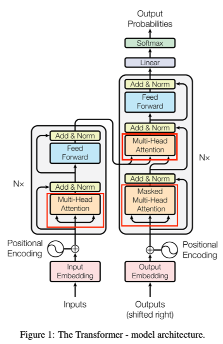
为什么需要Attention¶
在nlp领域，输入的序列较长，如文本、音频和视频等等，传统的RNN方法在处理较长序列时会出现梯度消失或梯度爆炸，一种专门用于训练推理专用模型以实现。
Attention就是在模型处理当前时间步时候，可以自适应地关注序列中更重要的部分，通过显式地计算每个位置的相关性，并加权求和来获取上下文信息。
Attention机制可以让模型动态分配注意力权重，使得生成某个词的时候，可以侧重参考输入序列的相应语义部分， 捕捉长距离依赖方面更出色。
注意力机制的核心目标是：识别上下文对词义的调整和影响。
- 输入是一组词向量，这些词向量已经包含基础语义（来自词典），但这种语义是客观、静态的。
- 真正赋予文本主观语义的是词序和上下文组织方式。
- 比如“美女”在不同语境中可能表达完全不同的含义。
所以，注意力机制的关键在于：捕捉上下文如何修改原本的客观词义。
注意力机制计算¶
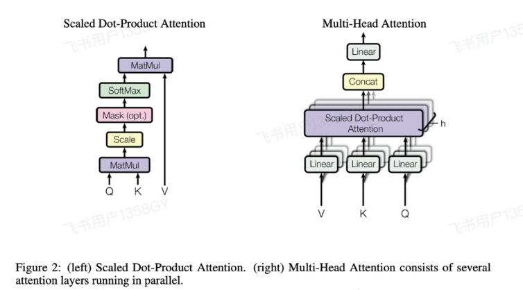
以transformer经典的Scaled Dot-Product Attention计算为例，我们需要先了解Q,K,V
- Q(Query):是当前需要关注的信息，用于寻找相关信息。
- K（Key）:是每个元素的标识或特征，用于与Query比较。
- V（Value）:是每个元素的实际内容，用于生成最终输出。
词嵌入已经解决了单个词单个token语义的问题了，注意力机制要解决的就是许多词组合在一起之后，整体体现出来的那个语义。
你只有把一句话里多个词同时输入到模型里面，前面说的那一点才能体现出来，所以接下来讲解输入部分，就不考虑只输入一个词的情况了，而是考虑输入一组值的情况。 这个时候这组值向量就组成了一个数据矩阵。假如说输入的是一个T行的矩阵，输出它也是一个T行矩阵。 至于输出的列数，也就是一个词向量它的维度的个数，我们把token变成词向量。
为什么 Q 和 K 的内积能体现上下文关系？¶
- 把 Q 和 K 看作一组向量。
- 它们的乘法本质是两两之间的内积计算。
- 内积表示一个向量在另一个上的投影，反映的是相关性。
- 所以，QK^T 就是在衡量：每个词与其他词在语义上的相关程度。
矩阵运算可以从多个角度理解：
- 一种是看作空间变换（线性代数视角）；
- 另一种是看作向量集合之间的关系（语义交互视角）；
在注意力机制中，我们选择后者，因为它更符合语言理解和模型设计的初衷。
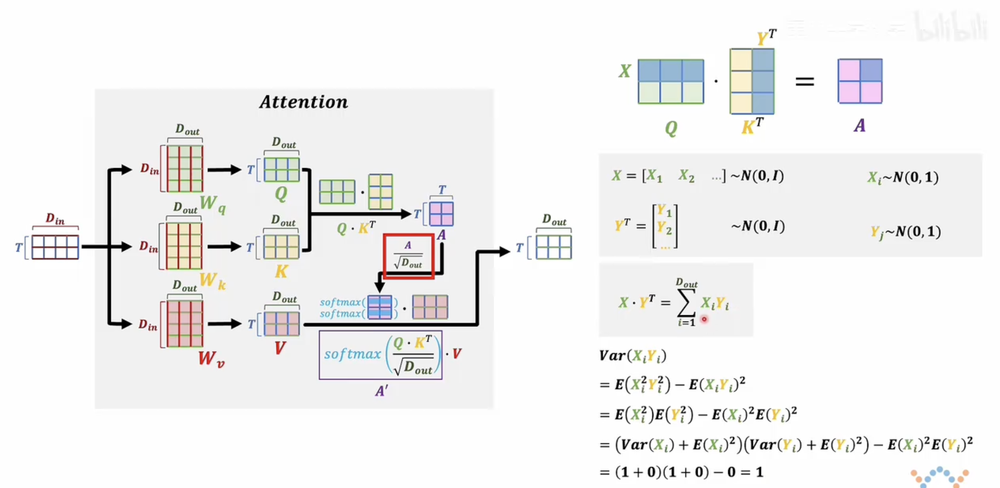
在注意力机制中，输入的词向量矩阵首先会分别与三个可学习参数矩阵 W_Q、W_K、W_V 相乘，得到对应的 Q、K、V 矩阵。这一步本质上是完成了从原始词向量空间到新空间的线性变换。
真正体现注意力机制核心的是后续操作：
-
计算注意力得分矩阵 A：
将 Q 与 K 的转置相乘（也可以理解为 K 与 Q 的转置相乘，本质相同），得到一个 \(T\times T\) 的矩阵 A，其中每个元素表示两个位置之间的相关性或注意力强度。 -
缩放操作：
对 A 中的每一个元素除以 \(\sqrt{d_k}\)（\(d_k\)是 K 的维度），这个步骤称为“缩放（scaling）”，目的是防止点积结果过大导致 softmax 进入饱和区，影响梯度传播。
为什么要这样做？我们可以从概率的角度来解释：
- 假设 Q 和 K 的每一行都服从标准正态分布（均值为0，方差为1），并且各分量之间相互独立。
- 那么 Q 的一行与 K 的一列做点积后，其结果是一个期望为0、方差为 dₖ 的高斯分布。
- 因此，为了使该分布重新变为标准正态分布（方差为1），我们对结果除以 √dₖ。
这样处理后，softmax 的输入数据更稳定，训练过程也更加平稳有效。
Q 与 K 相乘后再除以 \(\sqrt{d_k}\)，是为了控制点积结果的数值范围，使其更适合后续 softmax 操作，提升模型稳定性。
注意力机制中缩放操作的概率解释¶
我们重点分析注意力得分矩阵 $ A $ 中的一个元素。该元素由 Q 的一行与 K 的一列相乘得到，即：
假设 Q 和 K 的每个元素都服从标准正态分布（均值为 0，方差为 1），并且相互独立。
分析单个乘积项的方差¶
对于每一项 $ X_i \cdot Y_i $：
- 期望：\(\mathbb{E}[X_i Y_i] = 0\)
- 方差：
$$ \text{Var}(X_i Y_i) = \mathbb{E}[(X_i Y_i)^2] - (\mathbb{E}[X_i Y_i])^2 = \mathbb{E}[X_i2]\mathbb{E}[Y_i2] = 1 $$
当我们将所有 $ d_k $ 项累加后，整体的方差变为：
缩放操作的意义¶
为了使 $ A_{ij} $ 重新恢复为标准正态分布，我们需要对其除以标准差 $ \sqrt{d_k} $：
这样处理后，$ A'_{ij} $ 的期望仍为 0，方差为 1，更适合后续的 softmax 操作。
- Q、K、V 是输入词向量经过线性变换后的表示
- Q 与 K 相乘得到注意力得分矩阵 A
- 对 A 缩放是为了控制其方差，使其更适配 softmax
- Softmax 从概率角度对注意力得分进行归一化
- 最终输出是对 V 的加权求和，权重由注意力得分决定
注意力机制中为什么要除以 \(\sqrt{d_k}\)？¶
在 Transformer 的注意力机制中，计算注意力得分时会执行如下操作：
其中 $ Q, K, V $ 是输入词向量分别与三个可学习矩阵相乘得到的查询（Query）、键（Key）和值（Value）向量。
我们重点分析为什么要对 $ QK^T $ 除以 $ \sqrt{d_k} $，即所谓的“缩放”操作。
一、点积的统计特性分析¶
1. 假设条件（标准正态分布）¶
设： - $ Q_i = (x_1, x_2, \dots, x_{d_k}) $ - $ K_j = (y_1, y_2, \dots, y_{d_k}) $
其中： - 每个 $ x_i \sim \mathcal{N}(0, 1) $ - 每个 $ y_i \sim \mathcal{N}(0, 1) $ - 所有 $ x_i $ 和 $ y_i $ 彼此独立
那么注意力得分定义为：
2. 单项乘积的期望与方差¶
对于每一项 $ x_k y_k $：
-
期望： $$ \mathbb{E}[x_k y_k] = \mathbb{E}[x_k] \cdot \mathbb{E}[y_k] = 0 \cdot 0 = 0 $$
-
方差： $$ \text{Var}(x_k y_k) = \mathbb{E}[(x_k y_k)^2] - (\mathbb{E}[x_k y_k])^2 = \mathbb{E}[x_k^2] \cdot \mathbb{E}[y_k^2] $$
由于 $ x_k \sim \mathcal{N}(0,1) $，有： - $ \mathbb{E}[x_k^2] = \text{Var}(x_k) + (\mathbb{E}[x_k])^2 = 1 + 0 = 1 $ - 同理 $ \mathbb{E}[y_k^2] = 1 $
所以： $$ \text{Var}(x_k y_k) = 1 \cdot 1 = 1 $$
3. 整体点积的期望与方差¶
现在来看整体的 $ A_{ij} = \sum_{k=1}^{d_k} x_k y_k $：
-
期望： $$ \mathbb{E}[A_{ij}] = \sum_{k=1}^{d_k} \mathbb{E}[x_k y_k] = 0 $$
-
方差： $$ \text{Var}(A_{ij}) = \sum_{k=1}^{d_k} \text{Var}(x_k y_k) = d_k \cdot 1 = d_k $$
因此，注意力得分服从以下分布：
二、标准化：除以 $ \sqrt{d_k} $ 的数学意义¶
我们现在对注意力得分进行标准化：
根据方差的线性变换性质：
同时期望仍为零：
因此，标准化后：
三、Softmax 的影响与数值稳定性¶
Softmax 函数定义如下：
当 $ z_i $ 数值过大时，指数函数会导致数值溢出或梯度消失。例如：
- 若 $ z_i \gg 0 $，则 softmax 输出集中在接近 1 或 0 的位置，形成“尖峰”
- 若 $ z_i \sim \mathcal{N}(0,1) $，softmax 输出更平滑，有助于模型学习合理的权重分配
因此，通过除以 $ \sqrt{d_k} $，我们可以让 softmax 输入处于一个“良好”的区间内，提升训练稳定性。
在注意力机制中，将 QKᵀ 除以 $ \sqrt{d_k} $ 的本质是对点积结果进行标准化，使其从高方差正态分布 $ \mathcal{N}(0, d_k) $ 转换为标准正态分布 $ \mathcal{N}(0, 1) $，从而适配 softmax 操作，提升模型稳定性和表达能力。
计算流程¶
-
输入 输入为一个形状为 \(T \times D_{in}\) 的矩阵（\(T\) 表示序列长度，\(D_{in}\) 表示输入维度 ）。
-
线性变换
- 通过权重矩阵 \(W_q\)（形状为 \(D_{in} \times D_{out}\) ）对输入进行线性变换，得到 \(Q\)（Query），形状为 \(T \times D_{out}\)。
- 通过权重矩阵 \(W_k\)（形状为 \(D_{in} \times D_{out}\) ）对输入进行线性变换，得到 \(K\)（Key），形状为 \(T \times D_{out}\)。
- 通过权重矩阵 \(W_v\)（形状为 \(D_{in} \times D_{out}\) ）对输入进行线性变换，得到 \(V\)（Value），形状为 \(T \times D_{out}\)。
-
计算注意力分数
- 计算 \(Q\) 与 \(K^T\) 的矩阵乘积，得到注意力分数矩阵 \(A\)，形状为 \(T \times T\)。
- 对 \(A\) 进行缩放，除以 \(\sqrt{D_{out}}\) ，得到缩放后的注意力分数。
-
归一化 使用 softmax 函数对缩放后的注意力分数进行归一化，得到概率分布矩阵 \(A'\) 。
-
计算输出 将归一化后的矩阵 \(A'\) 与 \(V\) 进行矩阵乘法，得到最终的输出，形状为 \(T \times D_{out}\)。
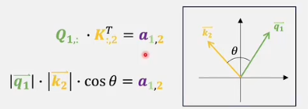
注意力机制中的 Q、K、V 理解（续）¶
虽然也可以从空间变换的角度理解注意力机制，但那样过于复杂。我们更倾向于将 Q 和 K 看作一组向量进行处理。
- Q 的每一行是一个词向量；
- K 的每一列也是一个词向量；
- Q 与 K 的转置相乘，本质是：每个词向量与其他所有词向量之间的内积计算；
- 这个结果保存在矩阵 A 中，表示的是：词与词之间的相关性强度。
内积的意义¶
两个向量的内积可以看作是它们之间投影的关系：
- 若夹角 θ 为 0°，说明两个向量方向一致，内积最大；
- 若夹角为 90°，两个向量正交，内积为 0；
- 若夹角大于 90°，内积为负，代表负相关。
因此：
- 正值 → 正相关；
- 负值 → 负相关；
- 接近 0 → 几乎无关。
自注意力机制的本质¶
在自注意力中，输入数据来自同一组词向量：
- 每个词都要和包括自己在内的所有词做内积；
- 得到的 A 矩阵是一个“关系表”；
- 行：当前词；
- 列：被关注的词；
- 值：两者之间的语义相关程度。
- Q、K 相乘得到的 A 矩阵反映了：上下文中词语之间的相互影响与关联；
- 这种机制让模型能够动态识别哪些词对当前词的理解更重要；
- 是注意力机制捕捉主观语义变化的关键所在。
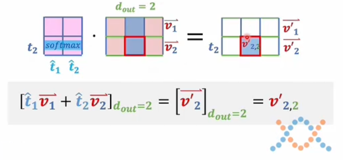
注意力机制中的上下文修正过程
在注意力机制中：
- A 矩阵（即 Q 与 K 的乘积）表示的是：词与词之间的相关性；
- 每一项 A_ij 表示第 i 个词对第 j 个词的关注程度；
- 经过 softmax 处理后，这些值被归一化为 0 到 1 之间的权重。
如何利用 A 去修正原始语义？
- 使用 A 与 V 相乘，得到新的词向量矩阵；
- 新的每一行仍然是一个词向量，但它已经被上下文所“修正”了；
- 修正规则是：
- 每个维度的更新，只受其他词向量中相同维度的影响；
- 影响的大小由 A 中对应行的权重决定。
以 \(t_2\) 这个词为例：
- 它的新词向量由所有词向量的对应维度加权求和而来；
- 权重来自 A 中 \(t_2\) 对应的那一行；
- 如果某个词和 \(t_2\) 高度相关（比如内积大），那它对 \(t_2\) 的影响就大；
- 若两者正交（内积为 0），则没有影响。
- Q 和 K 的相乘：获取上下文关系；
- Softmax 后的 A：转化为关注权重；
- A 与 V 相乘：用上下文去修正原始词义；
- 最终输出的词向量不仅包含原始语义，还融合了上下文信息；
- 这种动态调整使得语言表达具有主观性和多样性。
注意力机制中的 Q 和 K：为什么需要两个矩阵？¶
讲到这里，希望大家对注意力机制已经有了初步理解。但在学习初期，我有两个关键疑问：
一、为什么不能只用一个矩阵 A 来表示注意力权重？¶
- 如果直接训练出一个矩阵 A，相当于从输入 X 到输出 A 是一个线性变换；
- 线性变换只能表达词之间的一一对应关系，无法捕捉复杂的语义交互；
- 而使用 Q 和 K 分别进行计算（即 \(Q\cdot K^T\)），本质上是构造了一个二次型；
- 这种形式增强了模型的表达能力，能更好地捕捉非线性关系，比如上下文之间的复杂关联。
结论：Q 和 K 的分离设计为模型引入了更强的表达能力。
二、那为什么不只用一个 W 矩阵，让它自己和自己相乘呢？¶
- 单纯从数学上看，W 和 Wᵀ 相乘确实也可以得到一个矩阵；
- 但它会生成一个对称矩阵，限制了模型灵活性；
- 而 Q 和 K 使用不同的参数矩阵（\(W_Q\) 和 \(W_K\)）则不会出现这种限制；
- 虽然数学上两者等价，但在实际建模中它们承担了不同功能。
引入“设定语义”与“表达语义”的视角
为了帮助理解 Q 和 K 的分工，我们可以将语义分为三类：
| 类型 | 含义 |
|---|---|
| 客观语义 | 来自词典的静态语义 |
| 主观语义 | 在上下文中动态调整的语义 |
| 设定语义 | 上下文为后续表达提供的语境 |
| 表达语义 | 在设定语境下表达的具体观点 |
注意：这些术语是我个人定义，用于辅助理解。
Q 和 K 的角色划分（逻辑层面）¶
- Q 更倾向于表达当前词的表达语义（观点）；
- K 更倾向于提供上下文的设定语义（语境）；
- 二者通过内积建立联系：当前观点是否与该语境匹配？
换句话说：
- Q 是“我在说什么”
- K 是“我说这句话时的背景”
从训练角度看 Q 和 K 的必要性¶
- 在训练过程中，如果 Q 和 K 的匹配度低（A 中数值小），说明当前参数有问题；
- 反向传播会调整 WQ 和 WK，使 Q 和 K 的相关性增强；
- 最终模型学到的是所有训练数据中“表达语义”的交集；
- 如果没有 Q 和 K 的区分，就相当于把所有语境统一处理；
- 对物理规律这类统一世界观有效；
- 但对人类语言这种多语境、多价值观的情况就不够用了。
类比理解：注意力机制 = NLP 中的条件语句¶
- 就像程序中根据条件分支执行不同操作一样；
- 注意力机制允许模型根据不同的设定语义，选择性地激活对应的表达语义；
- 这也是为什么注意力机制能支持“在不同语境下表达相反观点”这一人类思维特点。
实际应用中的启示¶
- “洗地”文章就是通过操控设定语义来引导读者得出特定结论；
- 如果一篇文章在同一设定下表达矛盾观点，说明逻辑混乱；
- 注意力机制的设计，正是为了避免这种情况的发生。
总结¶
| 视角 | 内容 |
|---|---|
| 数学角度 | \(Q\cdot K^T\) 提升模型表达能力，优于单一线性或对称矩阵 |
| 语义角度 | Q 表达观点，K 提供语境，共同构建主观语义 |
| 训练角度 | 通过反向传播优化设定与表达之间的匹配程度 |
| 应用角度 | 支持多语境、多观点表达，模拟人类复杂思维 |
如果你能接受这个理解方式，再去看待自注意力机制和交叉注意力机制，就会更加清晰易懂。这只是我的一种解释思路，不一定完全准确，但希望能为你打开一扇理解的大门。
自注意力与交叉注意力机制解析¶
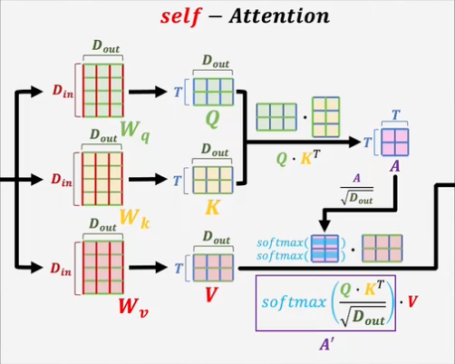
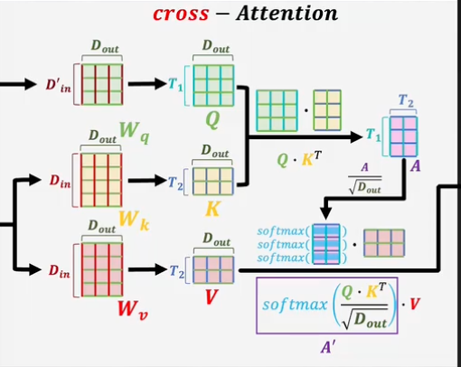
自注意力 vs 交叉注意力：从语义设定与表达角度理解¶
自注意力和交叉注意力的核心都离不开 Q、K、V 三个矩阵，但它们的数据来源不同：
| 类型 | Q 来源 | K/V 来源 | 特点 |
|---|---|---|---|
| 自注意力 | 来自相同输入 | 来自相同输入 | 模型自主理解设定与表达语义 |
| 交叉注意力 | 来自目标输入 | 来自参考输入（如编码器输出） | 模型依赖外部设定，只学习表达语义 |
类比理解¶
- 自注意力：像是“闷头自学”
- 所有理解都来自原始材料；
- 需要先理解上下文设定，再推理表达；
-
学得深，能举一反三。
-
交叉注意力：像是“对照参考资料学习”
- 设定语义由外部提供；
- 只需关注表达语义；
- 学得浅，记忆性强，泛化能力弱；
- 容易“坚信自己没错”，只是题变了。
应用场景举例¶
- 翻译任务中：交叉注意力是一种优势；
- 编码器提供源语言的设定语义；
- 解码器在此基础上生成目标语言的表达；
- 是一种“语义校准”过程。
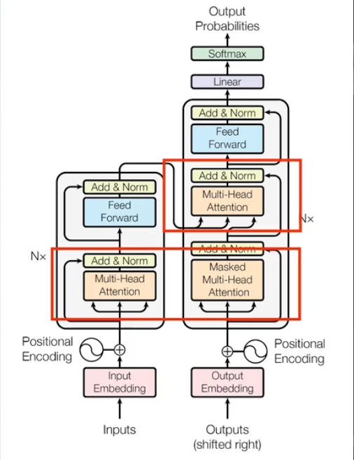
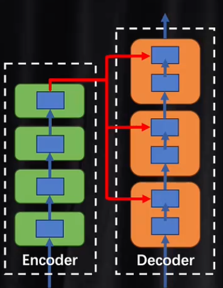
Transformer 中的结构差异¶
在 Transformer 中：
- 编码器：仅使用自注意力；
- 解码器：
- 第一层是自注意力（理解当前已生成内容）；
- 第二层是交叉注意力（与编码器输出对齐，进行语义校准）；
图中通常只画一层结构，但实际上这些模块是可以堆叠多层的（Nx 层），每一层都会重新校准一次。
总结对比¶
| 维度 | 自注意力 | 交叉注意力 |
|---|---|---|
| 数据来源 | 相同 | 不同 |
| 理解深度 | 深（设定 + 表达） | 浅（仅表达） |
| 泛化能力 | 强 | 弱 |
| 适用场景 | 理解、生成 | 翻译、校准 |
Transformer在训练与推理中的流程差异¶
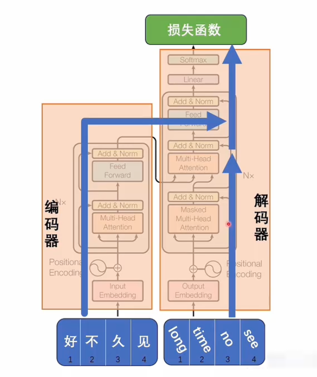
Transformer 的训练与推理流程解析¶
一、训练阶段：编码器与解码器协同工作¶
- 输入形式：
- 编码器输入中文：“好久不见”
-
解码器输入英文：“long time no see”
-
运行流程：
- 编码器将“好久不见”转换为潜空间词向量；
- 解码器从“开始符号”开始逐步生成目标序列；
- 使用交叉注意力机制，让解码器理解源语言语义；
- 最终通过 softmax 输出下一个 token 概率分布；
- 损失函数计算预测结果与真实标签之间的差异；
- 反向传播优化模型参数，使编码器和解码器在潜空间中语义对齐。 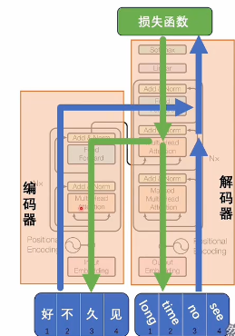
二、推理阶段：自回归生成机制¶
- 问题背景：
- 中英文 token 数量不一致（sequence to sequence）；
-
无法简单地一对一映射；
-
解决方法：
- Transformer 在解码时借鉴了 RNN 的自回归思想；
- 解码过程是串行的，一个 token 接一个生成；
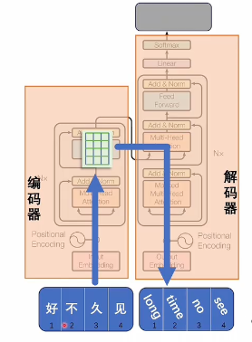
- 具体流程：
- 编码器处理原始输入，生成固定长度的词向量；
- 解码器从“开始符号”出发，进行第一次预测；
- 将预测结果与历史输出拼接后再次输入；
- 重复该过程，直到输出“结束符号”为止；
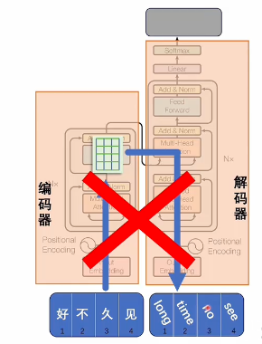
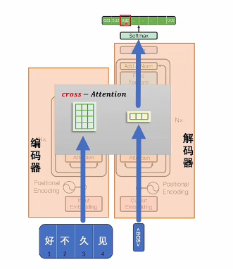
这种方式可以支持任意长度的目标序列，灵活应对 seq2seq 场景。
三、Transformer 结构变体的理解¶
| 模型类型 | 组成 | 功能说明 |
|---|---|---|
| 完整 Transformer | 编码器 + 解码器 | 支持翻译、摘要等跨模态任务 |
| GPT 类模型 | 仅解码器 | 实际具备编码能力，可进行上下文理解和生成 |
- GPT 模型如何工作？
- 输入一段文本，模型将其视为已生成内容；
- 然后继续生成后续内容；
- 并非凭空生成，而是基于已有上下文；
-
至于执行哪种任务（续写、摘要、翻译），取决于训练目标；
-
多语言支持方案：
- 将所有语言统一到一个大 token 表中；
- 模型通过大量数据学习不同语言之间的对应关系；
- 不需要单独的编码器也能实现翻译功能。
四、总结对比¶
| 阶段 | 特点 | 是否并行 | 依赖外部信息 |
|---|---|---|---|
| 训练 | 编码器 & 解码器同时参与 | ✅ 是 | ✅ 是 |
| 推理 | 解码器自回归生成 | ❌ 否 | ✅ 是（输入上下文） |
| 架构 | 是否需编码器 | 应用场景 |
|---|---|---|
| 完整 Transformer | ✅ 是 | 多任务、翻译 |
| GPT 类模型 | ❌ 否 | 生成、对话、续写 |
五、类比理解¶
- 编码器：理解当前语境；
- 解码器：根据语境表达观点；
- 交叉注意力：校准两个语义空间是否一致；
- 自注意力：内部逻辑推理，构建完整语义表示；
- 自回归生成：像人一样逐句思考、表达。
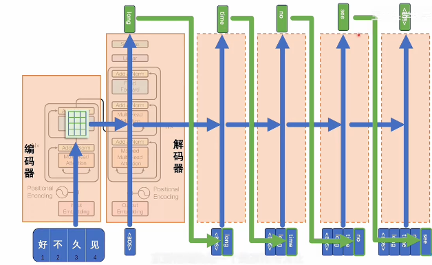